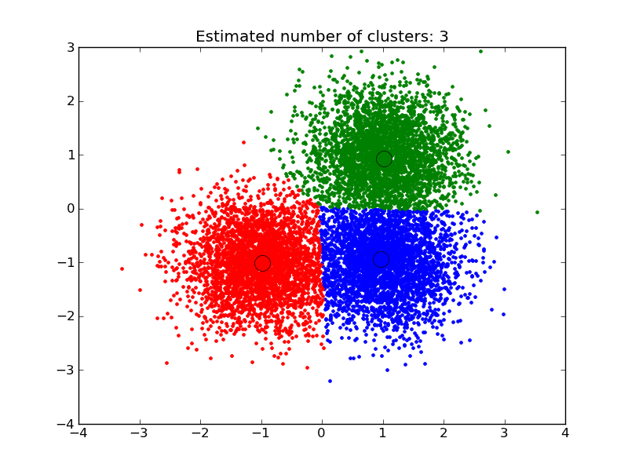

A demo of the mean-shift clustering algorithm¶
Reference:
Dorin Comaniciu and Peter Meer, “Mean Shift: A robust approach toward feature space analysis”. IEEE Transactions on Pattern Analysis and Machine Intelligence. 2002. pp. 603-619.
Script output:
number of estimated clusters : 3
Python source code: plot_mean_shift.py
print __doc__
import numpy as np
from sklearn.cluster import MeanShift, estimate_bandwidth
from sklearn.datasets.samples_generator import make_blobs
###############################################################################
# Generate sample data
centers = [[1, 1], [-1, -1], [1, -1]]
X, _ = make_blobs(n_samples=10000, centers=centers, cluster_std=0.6)
###############################################################################
# Compute clustering with MeanShift
# The following bandwidth can be automatically detected using
bandwidth = estimate_bandwidth(X, quantile=0.2, n_samples=500)
ms = MeanShift(bandwidth=bandwidth, bin_seeding=True)
ms.fit(X)
labels = ms.labels_
cluster_centers = ms.cluster_centers_
labels_unique = np.unique(labels)
n_clusters_ = len(labels_unique)
print "number of estimated clusters : %d" % n_clusters_
###############################################################################
# Plot result
import pylab as pl
from itertools import cycle
pl.figure(1)
pl.clf()
colors = cycle('bgrcmykbgrcmykbgrcmykbgrcmyk')
for k, col in zip(range(n_clusters_), colors):
my_members = labels == k
cluster_center = cluster_centers[k]
pl.plot(X[my_members, 0], X[my_members, 1], col + '.')
pl.plot(cluster_center[0], cluster_center[1], 'o', markerfacecolor=col,
markeredgecolor='k', markersize=14)
pl.title('Estimated number of clusters: %d' % n_clusters_)
pl.show()